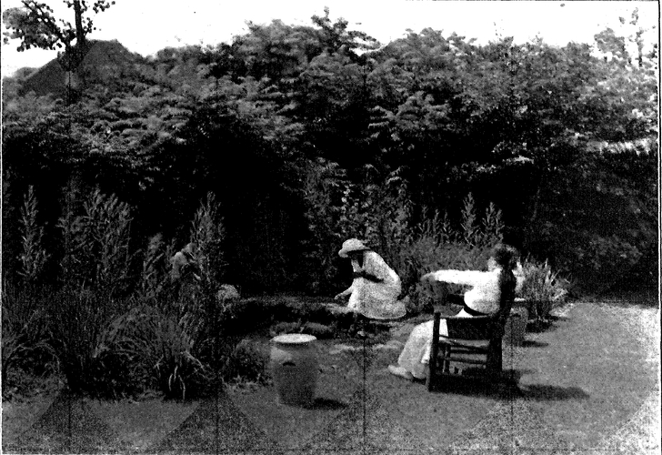

Principles Of Structural Composition. Part 3
Description
This section is from the book "The Natural Style In Landscape Gardening", by Frank A. Waugh. Also available from Amazon: The Natural Style in Landscape Gardening.
Principles Of Structural Composition. Part 3
And so we pass from paragraph to paragraph. Perhaps number three brings us to a hill top and gives us a view of the woodland about us; perhaps number four descends into a wooded ravine, where oak forest passes gradually into maple or beech; perhaps number five skirts the bank of a lake, giving us an opportunity to see the magnificent forms of the trees on the opposite shore, with their inverted images rippling toward us over the water. Such is the paragraphic structure of the natural park.
The same method is applicable to all kinds of informal composition. If the problem is a simple border of mixed perennials along a garden wall, we can adopt a leading motive and a paragraphic treatment. Or if we are only trying to improve a skyline we will divide it into paragraphs, giving each section its own treatment, its climax and its blend into the next section.
It is easy to show, of course, that this method is practically universal in art. Precisely the same terms may be used to describe the structure of an oration, a drama, or a good editorial in the Springfield Republican. Each has its theme, its successive paragraphs, its periods, its climaxes and its conclusion. Every musical composition has its theme, it is divided into several movements, it is paragraphed into strains, usually of sixteen measures each, the strains are subdivided into bars, and each bar may have two, three, four or six beats. This gives us our musical rhythm; but rhythm has its uses in other branches of art besides music. I have ^ often found it most convenient to speak of the rhythm of a garden composition. A row of trees has just the same succession of accents which we find in the measures of martial music. Rhythm is merely a certain kind of paragraphic structure. It is easy to see the same rhythmic or paragraphic disposition of parts, in ornamentation or total composition, in architecture; it can be found also in painting, especially in decorative painting, while any ensemble of sculpture necessarily follows the same plan of grouping.
NATURALISTIC COMPOSITION. BACK YARD GARDEN.
I) e sign ht Mr. Jens Jensen Photograph hg Htnnj Fnermann §• Sons.
The comparison of landscape gardening with music is always suggestive, and this comparison deserves to be followed out a little further just at this point. The composer of music, as will be easily discovered, builds up his compositions upon his selected motives in divers ways. The simplest song theme stands alone. The airs of ballads and folk songs, and even of dance tunes are always first used in this manner.
Later follows part singing, with two or three or four voices, in duet, trio or quartet. These several parts are harmonized. One voice, usually the soprano, "carries the air," that is the theme, while the others support it with harmonizing notes. This method of composition is frequently followed by the landscape architect.
In his more complex works, as in advanced symphony, he uses two motives together—sometimes three or four. These are woven through and through one another and into the texture of his symphonic fabric by the method which he calls counterpoint. Sometimes motives follow one another or are contrasted against each other without being counterpointed. This contrapuntal method of composition is always open to the landscape designer; and if it has been seldom adopted the difficulty of the problem will sufficiently explain that fact.
We may as well admit just here that this theory of paragraphs and motives does not make plain the whole of art. Neither does it offer a short cut to success in landscape architecture. We are not offering to teach the sum of garden art in one lesson. The paragraphic art has been known in literature almost since literature began, yet there are only a few writers who give a sound paragraphic structure to their work. There are still many essays, editorials and sermons which start nowhere and without any recognizable theme, run a level uneventful course to the same point. Unfortunately a considerable part of our naturalistic landscape gardening is of this sort. A man must have something to say and some way of saying it before he can preach a real sermon. A landscape architect must have a genuine inspiration and must then be possessed of an effective technic before he can make a landscape which has theme and structure, character and clothes, spirit and body. The paragraphic method belongs only to technic and even here indicates merely the fundamental principle. Its application still requires artistic skill and the skill of the artist comes only through years of devoted practice.
In as much as these structural principles of informal composition have been widely overlooked, and as it is important that they should be distinctly understood it may be worth while to summarize the entire case here.
Summary
1. Every informal park or garden should be partially or wholly enclosed in order to give it a feeling of unity and sometimes of privacy,—but this enclosure need not be so obvious nor so complete as in the formal garden. Good outlooks should be especially preserved. The enclosure will be composed chiefly of borders of trees and shrubs. In very large parks no general enclosure will be attempted, but special areas may be more or less segregated for special purposes.
2. The main structural features will usually be roads, paths, or navigable waters; and the principal one of these lines will, as nearly as practicable, circumscribe the area under treatment. In certain cases it will become a linear vertebral support, as, for example, in a long river-way or park-way.
3. The principal considerations in locating drives, walks, etc., will be (a) the shape of the area, (b) topograpKy, (c) convenience of travel between important points, (d) development of views:
4. To secure unity of artistic effect a suitable motive or theme should be selected and should be adhered to as closely as possible. Under no circumstances should effects at variance with the leading motive be introduced.
5. The successive episodes in the development of this motive will appear at well marked points, which points will all be upon the main structural roads or paths, thus developing the theme in a paragraphic manner.
6. The principal landscape effects will be brought together at these paragraphic points or nodes. At these points will occur (a) the principal changes in direction of roads or paths (b) principal change or grade, (c) change of planting, (d) principal interior or exterior views, (e) but especially the culmination of the motive episode.
7. It is desirable to avoid the use of straight lines and radial curves,—but awkward and unnatural curved or crooked lines must be equally avoided.
Continue to: